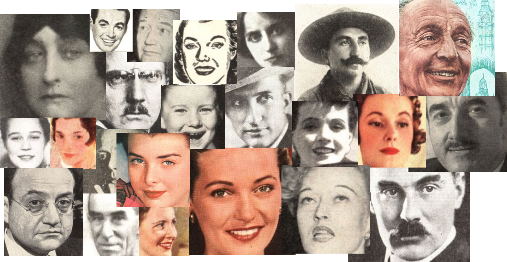
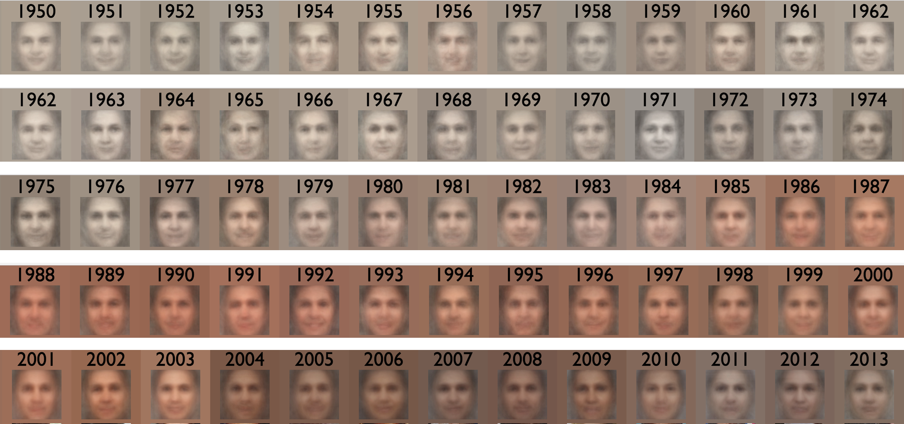
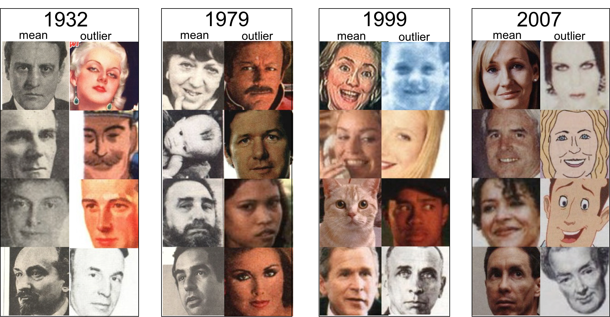

The question of open access to data has been widely debated throughout academia in recent years. However, these discussions have not sufficiently addressed how to make data meaningfully accessible to the general public. We address questions of open access to data, public accessibility, and fair use by proposing an art installation and launching a web-art piece that places proprietary cultural data into the public sphere. The project is based on the TIME magazine corpus released by free information activist Michael Best, and hosted by Cthulhu . While these activists have made the data publicly accessible, we are interested in advancing one step further by making the data intelligible, such that it generates meaning for a broader scope of individuals. With an interdisciplinary approach, we explore methodologies to make the data more accessible.
The first we did to make this body of data more accessible is to just put it out there - a full overview of all the covers, with a full issue behind each cover. Click on the image below to explore the webpage.
But, we also ask to what extent does data need to be interpreted for intelligibility? An important part of our work will be to run analytics on the magazine images and text to give the viewer an overview of the trends and patterns within this particular cultural product. We want to present another layer of accessibility and understanding to the public, that goes beyond browsing through individual issues.
In our preliminary studies, we have been developing computational methods for extracting images of faces from the corpus. We then computationally extract features from the image to determine mean characteristics for a given time period (whether by issue, year, or decade). We focus on the face because, arguably, faces constitute the most pertinent images in TIME magazine: most of the iconic images that appear in the magazine are photographs of influential (or famous) people. We are curious to see the trends in the types of faces that are shown, and if any representative face-type emerges with each issue or each year.
We want to create insightful overviews that can serve as starting points for exploration, to find patterns and meanings in the pixel data. We want to look at temporal dynamics, so the first step is to sort the images chronologically. The images are presented as thumbnails on a grid, where each column represents one year. In addition to sorting the images by year along the horizontal, we sort the images by their R G B value along the vertical direction so that the darkest image is on top. The background color over which the images are overlaid is the color representation of the average RGB pixel value for each year.
In the arrangement below, each column represents a year, and the images are arranged by average RGB value from top to bottom.

The visualizations are on browser platform, following our theme of accessibility. Putting things on the web makes them most accessible. Further developments of this work will include ways for the user to access details on demand about a particular photo, such as the context (whether the image was part of an article or an advertisement), the issue, the date, and other metadata. They can be viewed here and here.
Below, the images with the highest R pixel value for each year are near the top.

At this scale, we can start to look at the relationships between the features. Here we map the images onto a scatter plot, positioned according to their pixel values. There is one scatterplot per year, and the graphs are animated.
It's interesting that B and G follow each other closely over all time, but R values start deviating significantly from the others as the images become more colourful, which is consistent with visual inspection (more colorful images tend to be redder).
Sorting the images by their RGB features helps elucidate large scale temporal patterns and trends, but a viewer may be overwhelmed by the multitudes, and some aggregate measure, such as a mean, may be needed for clarity or further insight. This far away view may disconnect us from the richness of each of the images.
Forming a composite image of all images within a given year is a rudimentary, but informative, method for exploring these other features. The average pixel value over all images was then calculated to yield the composite.
We also calculate the mean of RGB pixel value of the images over each year, and consider how such a mean can be represented to help viewers gain a nuance, human, understanding. To this end, to qualitatively express the calculated RGB distribution, we select a number of images whose RGB values are closest to the mean within a given year, as well as a number of images that were least like the mean (outliers).
In the visualization, found here, the top row is the composite over the year, the next four rows are the closest to the calculated mean, and the bottom four rows are the outliers – the furthest from the mean.
Interestingly, a lot same essential information is communicated when the images are aggregated by decade, as can be seen from the image below, and in the visualization found here (where the top row, again, is the composite over the decade, the next four rows are images closest to the calculated mean, and the bottom four rows are the outliers). Being able to accurately and clearly convey results of a large data set into few images can allow users to have a more intimate experience with the data. Allowing users to focus on one image at a time can encourage qualitative observations and lead to tangential insights.

Some of the questions we ask are: In what ways does the data become clearer or more obscured as it is aggregated? Filtering and aggregation are helpful to explore large data sets, but what information is lost in the process? What is gained? These questions have not been fully addressed in this work, but interestingly, we found that some of the patterns discovered on the sorted overview were still represented in the aggregated images. Even when aggregating by decade, the same pattern in color persists, for this particular data sample. This is promising because serendipitous samples that are representative of mean measures can be a more engaging and intimate way for a user to explore the corpus than large data overlays.
Our process is guided by the intention of creating works that not only open access to the data, but also make it penetrable and meaningful. One of the challenges in this topic is capturing and working with the tension between the layers of interpretation (and thus obfuscation) that go into processing the data. We are aware that any layer of processing is embedded with human assumptions that are effectively baked into the coding of what gets highlighted or filtered out. This is true even in the creation of the images in the magazine corpus. Our goal is to develop tools with transparent methods that make large corpuses of information accessible and meaningful for both researchers and the general public.